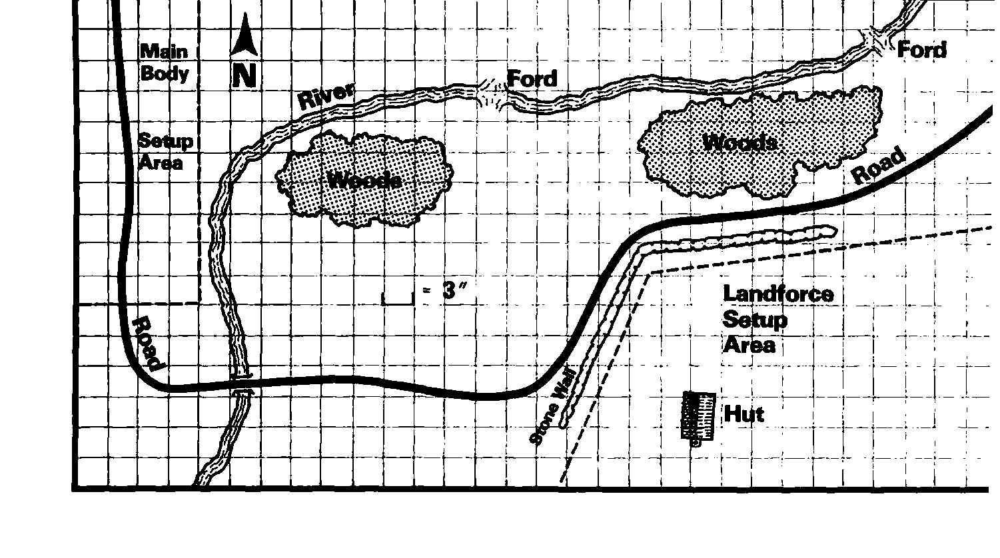

高级战役：梅雷尔渡口之战 Advanced Game Scenario: Battle of Merrell’s Crossing
前哨冲突结束，怪物主力投入战场，文明命运将由一次大战决定。国王的战场统帅加洛克将军 General Garrock 接掌正义方，沿蜿蜒的梅雷尔河设防。
这里河浅，多处可渡。将军把部队放在距河稍后的位置。邪恶武士黑德里克 Black Derek 指挥怪物，势必毫不留情地进攻。
精锐精灵已来增援，但传闻怪物有巨魔，连最勇敢的战士也为之胆寒。
按图布地形，“陆军”Landforce 正义方先在指定区部署，“主力军”Main Body 邪恶方随后。可用任何合法队形，并可战前施法，须记录持续时间。
有空间可把战场向北延伸 12 英寸，特别适合下述可选规则。
陆军须把敌模型全杀或逐出战场才胜。主力军须消灭或逐走所有敌模型，而且自己至少剩三十模型才胜。其他结果均平局。使用基础、中级、高级全部规则。
特殊规则 1。小屋四面墙每面可让两个模型射击或近战，表示箭孔等开口。屋内模型享坚实掩蔽，AC −4。
特殊规则 2。主力军首轮自动赢先攻。
特殊规则 3。使用 [2.11] 的精锐部队可选规则。
可选规则。若三场连续进行战役，前两场幸存部队可加入双方，作为旅；也可不管前战结果，直接把三场全部兵力集中打一场巨战。

上一节：中级战役：莱恩之战 Intermediate Game Scenario: Battle of Lairn
下一节：龙枪战役：奎灵诺斯之战 Dragonlance Scenario: Battle of Qualinost